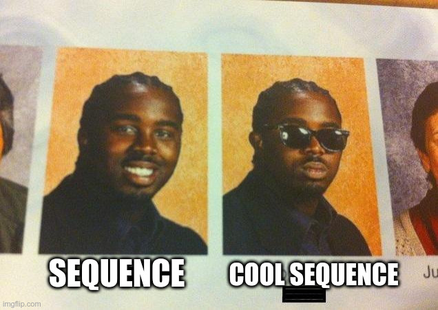

Submit on Mooshak Weekly Problems #02

You are given a sequence of positive integers of length N, S=(s1,s2,...,sN) and your goal is to remove some elements so that it becomes a cool sequence.In this problem, a sequence S is a cool sequence if for all elements x in S, the value x appears exactly x times in S
For example, (3,3,3), (4,2,4,1,4,2,4) and () (an empty sequence) are cool sequences, while (3,3,3,3) and (2,4,1,4,2) are not.
Given a sequence S with N elements, find the minimum number of elements that needs to be removed so that it will be a cool sequence.
The first line contains N, the length of the sequence. The second line contains s1 s2 ... sN, that is the elements of the sequence separated by single spaces.
The output should be a single line containing the minimum number of elements that needs to be removed so that S will be a cool sequence.
The following limits are guaranteed in all the test cases that will be given to your program:
| 1 ≤ N ≤ 105 | Number of elements in the sequence |
| 1 ≤ si ≤ 109 | Elements of the sequence |
Example input 1
4 3 3 3 3
Example output 1
1
Example input 2
5 2 4 1 4 2
Example output 2
2
Example input 3
6 1 2 2 3 3 3
Example output 3
0
Example input 4
1 1000000000
Example output 4
1
Example input 5
8 2 7 1 8 2 8 1 8
Example output 5
5